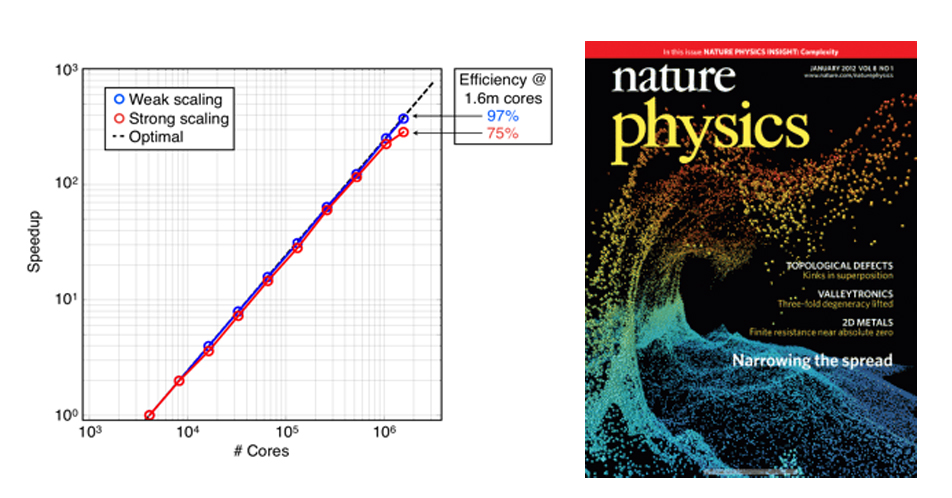
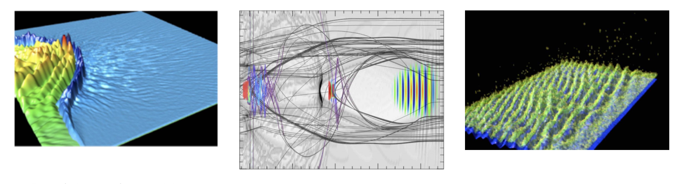

Access: To obtain access to OSIRIS, we simply ask that you fill out an MOU (download OSIRIS_MOU) and return it to us (picksc.org@gmail.com) along with your GitHub username. We will then be happy to add you to the appropriate GitHub team for OSIRIS.
Description: Over the past 15 years, we and our collaborators in the OSIRIS consortium have developed and continue to upgrade a state-of-the-art, fully explicit, multi-dimensional, fully parallelized, fully relativistic PIC code called OSIRIS and a set of sophisticated diagnostic and visualization packages [1-2]. OSIRIS is now an extremely mature code that has been run well over several hundred million core hours. Its impact is very large, as it is used not just by our group but by many groups throughout the US and the world on a variety of physics problems. OSIRIS is highly optimized on a single core (for linear as well as for higher order particle shapes) and it scales extremely well to over 1.5 million cores (on the Sequoia supercomputer @ LLNL). On modern parallel machines, OSIRIS has shown good scalability over a large variety of platforms. In 2011 OSIRIS was chosen by the DOE Office of Advanced Scientific Computing Research to be featured in their software effectiveness program. As part of this program, OSIRIS was shown to scale to the full Jaguar machine (220,000 cores) on both test and physics problems. It demonstrated high parallel scalability as well as single core efficiency (through the use of the SSE vector units). Recently, in addition to scaling to 1,600,000 cores on Sequoia, OSIRIS achieved a speed of > 2.2 PFlops on the Blue Waters supercomputer. There are also CUDA and Intel-Phi enabled versions of OSIRIS under continual development.

Figures: Figure 1 (left): Figure 1: Weak and strong scaling results on the Sequoia supercomputer at LLNL. For weak scaling, OSIRIS is shown to be > 97% efficient on > 1.5 million cores. For strong scaling, the code is 79% efficient on the full Sequoia machine; Figure 2 (right): OSIRIS simulation from the discovery of a laser-plasma acceleration mechanism that generates 20 MeV proton beams with a 1% spread, shown on the Nature cover.
OSIRIS is written in the object-oriented style using Fortran 90, which allows for the re-use of highly reliable legacy fortran codes while allowing for the rapid development of new modules. Over these 15 years, many new features have been added to it which improves both the speed and functionality of OSIRIS. The use of higher order particle shapes permits the use of large cells (compared to the Debye length) without numerical heating. It can use either momentum (uniform) or energy conserving (non-uniform) field interpolation. It can run using a moving window to efficiently model short pulses and it has Perfecly Matched Layers for absorbing electromagnetic waves at the boundaries. The parallelization is done either using domain decomposition with MPI across all cores or by using a hybrid approach where MPI is used across nodes and OpenMP is used to launch threads on the cores on a node. It also has dynamic load balancing routines for the MPI piece. There is a relativistic two body Coulomb collision model as well as a beta version of a hybrid algorithm (OSIRIS-H, [3]) which pushes particles throughout all regions including collisions, but in a high density region (collisional) MHD field equations are used to solve for the fields. The MHD field equations do not support high frequency waves so larger time steps can be used. This could be of use when modeling ion acceleration from laser-solid interactions. OSIRIS can model laser wakefield acceleration in a Lorentz boosted frame and solve for the laser fields using an envelope equation and a ponderomotive guiding center pusher for the particles.
New features continue to be developed. For example, OSIRIS now has the option of being run in quasi-3D using hybrid r-z PIC with a gridless phi. The fields (including currents) are expanded into an arbitrary number of azimuthal harmonics. This allows modeling lasers and plasma waves with the correct self-focusing geometry in which the spots sizes have nearly azimuthal symmetry. Another recent addition is a hybrid FFT/Finite difference field solver that can eliminate the Numerical Cerenkov Instability.
In the near term, key features from OSIRIS will be extracted and put into the UPIC Framework and versions of OSIRIS will be used for educational software.
Visualization and data analysis
Visualization and data analysis are an essential and nontrivial part of any parallel numerical infrastructure. Over the past decade, members of the OSIRIS Consortium at UCLA and IST led by PICKSC member R.A. Fonseca have developed a very sophisticated set of data analysis and visualization routines based on IDL, called VisXD. We also have a smaller set of Python routines that emulate some of the analysis routines. The data in our production codes is written in HDF5 so that output can be easily viewed from other public or private analysis and visualization routines. Other analysis routines commonly used are Matlab and Visit. Examples from VisXD and Visit are shown below. We have also developed diagnostics and analysis tools specific to the study of the nonlinear optics of plasmas. These include diagnosing the relection and absorption of laser light and the energy flux of electrons crossing virtual or real boundaries in the plasma.

Figures: Figure 3 (left): Figure 3: Images of laser and density in a fast ignition relevant simulation; Figure 4 (middle): Laser and plasma density from a laser wakefield simulation. We can tag particles of interest and plot their trajectories; Figure 5 (right): Plasma waves and electrons in a High-Frequency-Hybrid-Instability simulation showing how the hot electrons are effected by a spectrum of plasma waves.
References
[1] R. G. Hemker, “Particle-In-Cell Modeling of Plasma-Based Accelerators in Two and Three Dimensions,” Ph.D. dissertation, University of California, Los Angeles (2000). Arxiv link
[2] R. A. Fonseca, L. O. Silva, F. S. Tsung, V. K. Decyk, W. Lu, C. Ren, W. B. Mori, S. Deng, S. Lee, T. Katsouleas, and J. C. Adam, Lecture Notes in Computer Science (Springer, Heidelberg, 2002), Vol. 2331, pp. 342–351; R. A. Fonseca et al, “One-to-one direct modeling of experiments and astrophysical scenarios: pushing the envelope on kinetic plasma simulations,” Plasma Phys. Control. Fusion 50, 124034 (2008). doi link
[3] F Fiuza, M Marti, R A Fonseca, L O Silva, J Tonge, J May, and W B Mori, “Efficient modeling of laser–plasma interactions in high energy density scenarios,” Plasma Phys. Control. Fusion 53, 074004 (2011). doi link